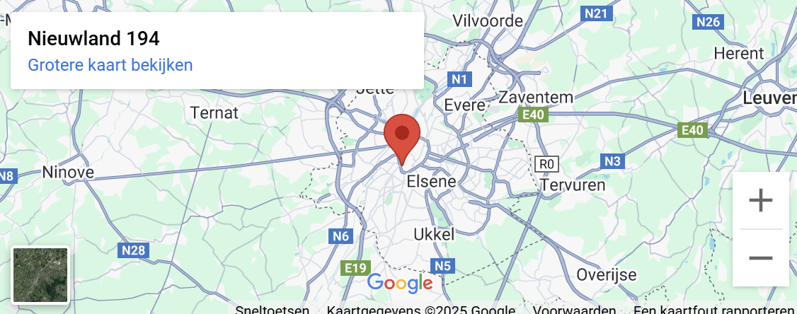

<!DOCTYPE html>
<html lang="en"></html>
<head>
	<link href="css/reset.css" rel="stylesheet" />
	<meta name="viewport" content="width=device-width, initial-scale=1.0" />
	<title>Basisschool Nieuwland</title>
	<link href="css/style.css" rel="stylesheet" />
	<link href="css/bredeschool.css" rel="stylesheet" />
</head>
<body class="start-body">
	<!-- <canvas id="canvas"> </canvas> -->

	<header>
		<div class="wrapper">
			<div class="nav-top">
				<a href="index.html">
					
				</a>
			</div>
			<!-- https://www.w3schools.com/howto/howto_css_dropdown.asp -->
			   <div class="navigation">
                        <div class="dropdown_1">
                        <button class="dropbtn_1">Onze Visies</button>
                        <div class="dropdown-content_1">
                            <a href="visie.html">Visie</a>
                            <a href="brede_school.html">Brede School</a>
                        </div>
                    </div>

                    <div class="dropdown_2">
					<button class="dropbtn_2">Algemene Informatie</button>
					<div class="dropdown-content_2">
						<a href="praktische_informatie.html">Praktische Informatie</a>
						<a href="inschrijven.html">Inschrijven</a>
                        <a href="klassen.html">Klassen</a>
					</div>
				    </div>
                    
                    <a href="nieuws.html" class="Nieuws">Nieuws</a>
                    <a href="contact.html" class="Contact">Contact</a>
                </div>

		</div>

		<div class="title">
			<h1>Wat is Brede School?</h1>
		</div>

	<div class="filter">
		<a href="brede_school.html" class="button">Wat</a>
		<a href="hoofdstedelijk.html" class="button">Hoofdstedelijke Academie</a>
		<a href="buiteling.html" class="button">Buiteling</a>
		<a href="filmclub.html" class="button">Filmclub</a>
	</div>

	<div class="container">

		<div class="item-1">
			<h2>Wat is Brede School?</h2>
			<div class="rectangle">
			<p>Brede Scholen zijn scholen die alles inzetten op maximale ontwikkelingskansen voor kinderen en jongeren. Hoe ze dat voor elkaar krijgen? Door samen te werken met de buurt, ouders en organisaties – een écht geïntegreerde aanpak dus. </p>
			</div>
		</div>

		<div class="item-2">
			<h2>Maximale Ontwikkelingskansen</h2>
			<div class="rectangle">
			<p>Als we aan school denken, denken we vaak aan een schoolgebouw, verplichte lessen en examens. Een school kan veel meer zijn dan dat. Een school is een plaats waar jongeren zich kunnen ontwikkelen. Een Brede School werkt samen met de buurt, ouders en lokale partners in onderwijs, cultuur, sport, jeugd, kinderopvang en welzijn. Ze werken samen aan een leerrijke en fijne omgeving voor alle kinderen en jongeren, vanuit een eenzelfde pedagogische lijn.</p>
			</div>
		</div>

		<div class="item-3">
			<h2>Opgroeien als Brussels ketje</h2>
			<div class="rectangle">
			<p>Kinderen en jongeren hebben een veilige omgeving nodig om te leren, te oefenen en te ontdekken. Een Brede School is zo’n veilige omgeving. Ze biedt kinderen en jongeren maximale ontwikkelingskansen.  Elke Brede School heeft een eigen focus. Die ontstaat uit de behoeften en talenten van kinderen en jongeren en de mogelijkheden van de wijk.</p>
			</div>
		</div>

		<div class="item-4">
			<h2>Geloven in de Brede School</h2>
			<div class="rectangle">
			<p>In 2010 keurde het VGC-College de visietekst 'Brede School' goed. Dat gebeurde na een intensieve samenwerking over de grenzen van beleidsdomeinen heen.</p>
			<p>In de praktijk realiseert de VGC deze visie op drie manieren:</p>	
				<ol>
				<li>- VGC subsidieert de Brusselse Brede Scholen voor wijkgerichte en lokale coördinatie.</li>
				<li>- VGC ondersteunt Brusselse Brede Scholen inhoudelijk.</li>
				<li>- VGC stimuleert en coördineert de Brusselbrede samenwerking en ontwikkeling van Brede Scholen.</li>
			</ol>
			<p>De Vlaamse Gemeenschap is een belangrijke partner van de VGC bij de realisatie van Brede School in Brussel.</p>
			</div>
		</div>

		<div class="item-5">
			<h2>Ondersteuning van de Brede Scholen in Brussel</h2>
			<div class="rectangle">
			<p><strong>Inhoudelijke ondersteuning via het Platform Brede School Brussel</strong>
			<p>Het Platform Brede School Brussel is deel van het Onderwijscentrum Brussel (OCB). </p>
			<p>De doelstelling? Deskundigheid bevorderen en de kwaliteit van de Brede Scholen in Brussel bewaken. Ook scholen die geen subsidies ontvangen, kunnen inhoudelijke ondersteuning krijgen. Het OCB voorziet een vormingsaanbod in groep en coaching op maat.</p></p>
			</div>
		</div>
	</div>
	

	<div class="footer">
		<div class="wrapper">
			<div ></div>

			<div class="icon-line-1"><p >0498596556</p></div>

			<div class="icon-line-1"><p >directie@bsnieuwland.be</p></div>

            <div class="icon-line-1">
                <a href="https://www.facebook.com/bsnieuwland/" target="_blank">
                
                </a>
                <p>Basisschool Nieuwland</p>
            </div>

            <div class="links-footer">

				<div class="item_row_1">
					<a href="visie.html" class="visie-footer">Visie</a>
					<a href="brede_school.html" class="bredeschool-footer">Brede School</a>
					<a href="klassen.html" class="klassen-footer">Klassen</a>
			    	<a href="inschrijven.html" class="inschrijven-footer">Inschrijven</a>
				</div>

			    <div class="item_row_2">
					<a href="contact.html" class="contact-footer">Contact</a>
			    	<a href="nieuws.html" class="nieuws-footer">Nieuws</a>
					<a href="praktische_informatie.html" class="praktischeinformatie-footer">Praktische Informatie</a>
				</div>				
            </div>

			<div class="icon-line-2"><p>Nieuwland 194, 1000 Brussel</p></div>
			
		</div>
	</div>


	<!-- <script src="js/index.js"></script> -->
</body>
</html>